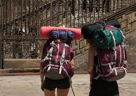

Como é um mochilão?
Mochilão é uma grande loucura com grandes viagens, grandes experiências, grandes aprendizados. Tudo é grande exatamente para trazer o significado do "ão" na palavra. Tem várias formas de fazer, e precisa de dinheiro OU NÃO. 97% das pessoas que eu conheço sonham em conhecer o mundo mas sempre vem com a ideia de "poxa, eu não tenho tanto dinheiro pra conhecer o mundo" e fica infeliz com esse desejo super enterrado no coração. Mas aqui vou explicar como faz mochilão sem precisar de tanto dinheiro. Pelo menos, como eu faço sem precisar de tanto dinheiro.
Worldpackers
Eu viajo por uma plataforma com o nome Worldpackers, essa plataforma liga o anfitrião ao mochileiro, mas lembrando que não é só para mochileiros, pode utilizar a plataforma para fazer viagens de férias, a negócios e muito mais! A gente aplica para a vaga e se o anfitrião do destino que escolhemos gostar do nosso perfil ele entra em contato com a gente.
A maior parte dos integrantes da plataforma fazem mochilão.
Porque eu decidi fazer mochilão?
Como as 97% das pessoas do mundo, eu sempre sonhei em conhecer o mundo desde que eu me entendo por gente. E, com essa ideia de conhecer o mundo e não poder eu sempre conheci coisas e pessoas, por exemplo: Eu já fiz vários cursos, fiz ballet, violão, canto, pré-enem, inglês, informática, administração, flauta, natação, veterinária. Esses são só o que estou lembrando agora. Sim, nunca dediquei 100% a eles e nunca acabei todos eles, mas no momento que estou escrevendo, reparei uma coisa que sempre amei em todos eles, conhecer as pessoas novas, e conhecer coisas novas. Diferente de muitas pessaos que foram crescendo comigo da mesma idade que eu, eu não tinha medo do novo, muito pelo contrário, eu sempre me jogava ao novo, à nova oportunidade que raramente eu deixava passar. O que sempre me deu medo era ficar no mesmo lugar, até mesmo em empregos eu sempre entrava com a intenção de cresecr, mas saia quando: não via crescimento ou encontrava uma oportunidade nova.
Eu amei dois cursos na vida e me dedicava muito a eles. o ballet e o canto. Eu fiz ballet e canto de 7 anos de idade até 12 anos, eu amava de todo meu coração e meu objetio era fazer exatamente os dois viajando pelo mundo, sabe? Ser uma bailarina famosa e uma cantora famosa que rodava o mundo mostrando o maior talento que eu tinha. (na minha cabeça infantil eu seria perfeita fazendo os dois - e teria tempo)
Quando cheguei aos 12, comecei a sentir muita dor no pé e tive que sair do ballet, porque nas consultavas que eu estava fazedo eu e minha mãe descobrimos que eu estava com joanete. Hoje, eu sei que a maior parte das bailarinas tem o pé estragado, e isso é normal, mas naes, eu achava que isso me impediria e eu fui fazendo exame e esperando a liberação do plano de saúde até que enfim, aos 18 anos fiz a cirurgia e infelizmente só depois que eu descobri que eu não seria impedida, mas o tempo passou, fui endurecendo, meu é da cirugia dói muito até hoje, ainda sonho com o ballet mas felizmente estou com planos novos que vão me permitir conhecer o mundo de forma até mais fácil. Mas eu sinto ainda um grande amor e saudade pelo ballet. O canto, eu fui desanimando e afastando aos poucos mesmo gostando muito, porque u não senti que eu estava evoluindo e acabava não tendo o apoio da minha própria professora.
Quer entender melhor a ideia do mochilão?
Vá na página das minhas redes sociais e também acesse o site da wordpacks, la plataforma ensina direitinho como funciona o sistema deles e eu explico também no meu instagram.
Me segue, se tiver perguntas faça, se quiser me apoiar para eu continuar fazendo blogs contando como está sendo minhas viagens, e me ajudano também a continuar o mochilão, tem um sorteio te guardando! [LINK]